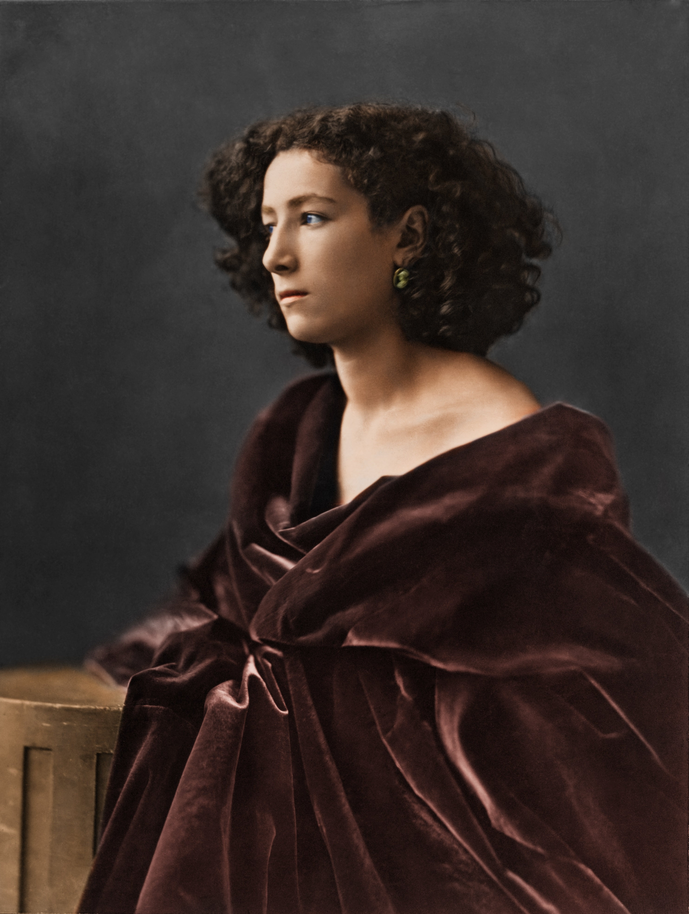
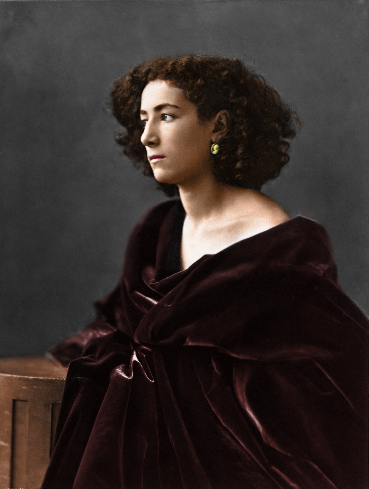
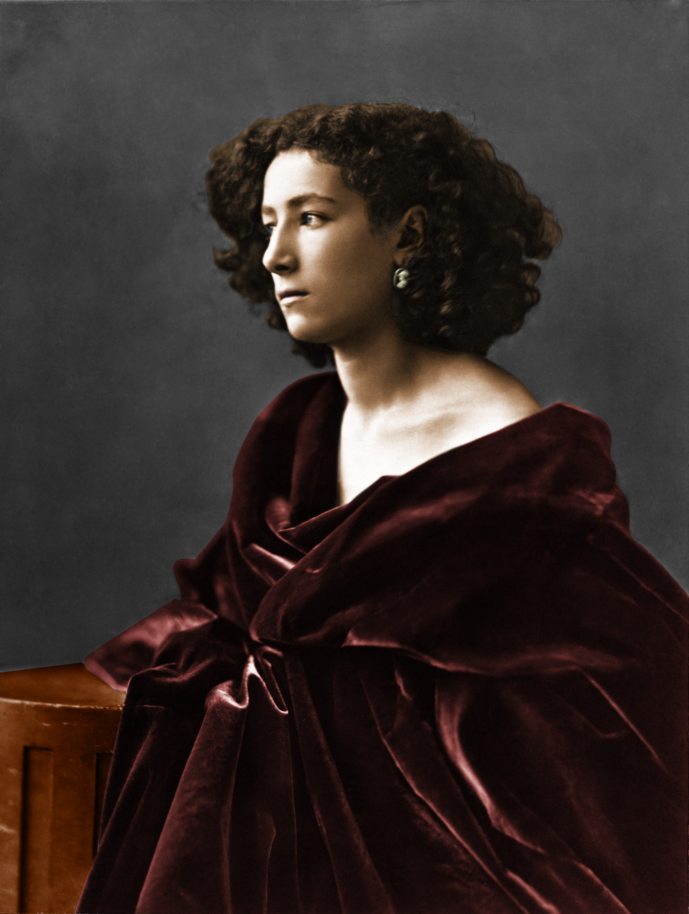
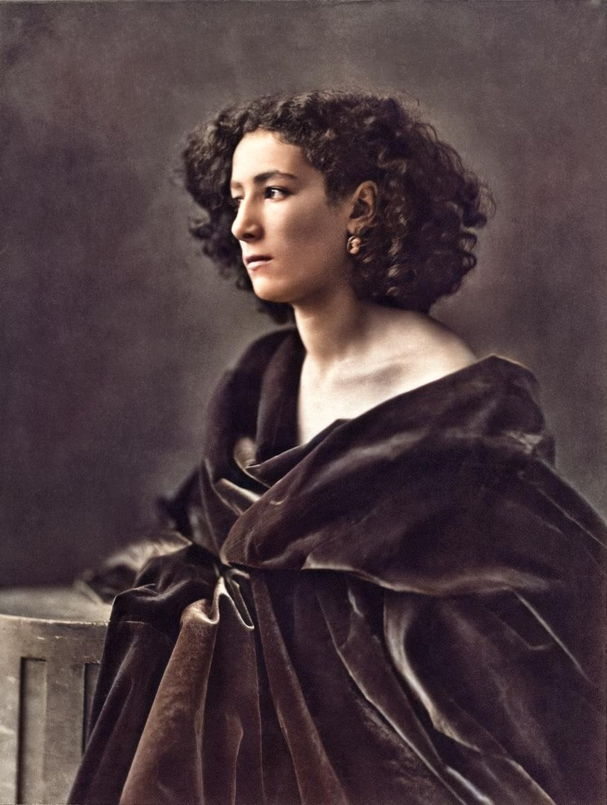

Une autre façon d'utiliser photoshop
Avec photoshop au cours de mon parcours scolaire, il a souvent été d'ordre de rendre invisible les choses mais cette fois avec ce projet ça a été tout autrement. Dans le cadre du cours de design numérique, nous nous sommes intéresé aux photographies monochrome ainsi qu'à la photographie en général. C'est un cours qui à été associer à la pratique de la photographie au sein de l'Université Gustave Eiffel. Il nous a été possible ainsi de retoucher les photos prises dans le cadre du cours dans celui de design numérique. Nous avons ainsi appris une autre façon d'utiliser photoshop et rapidement, le sujet de la photograhie monochrome à été abordé. Plusieurs techniques de recoloration nous on été apprises, de ce fait, notre dernier TP à été de recolorer plusieurs photographies en noir et blanc avec différentes méthodes, toutes aussi différentes des autres.
Du noir et blanc à la couleur : première méthode
Afin de parvenir à redonner de la couleur à une photographie, il est possible de
passer par quatre méthodes différentes. Ici nous allons voir la première
dont l'idée est d'appliquer des couleurs sur différentes parties de l'image à l'aide
de calques de réglages nommée "Courbes". On peut constater le résultat ci-dessous.

La deuxième méthode
Pour la deuxième méthode à été de coloriser à l'aide de calques de remplissage où la recherche s'est accentué sur la bonne couleur pour les tons chairs. Ici le mode de fusion le plus adapté à été l'incrustation et beaucoup plus subtil.

La troisième méthode
La troisième technique est l'utilisation de courbes de transferts de dégradés. C'est une technique utilisé par le photographe Sean Tucker. On peut d'ailleurs retrouver une vidéo montrant cette technique :
ici : https://www.youtube.com/watch?v=xdaELrYQMPk

La quatrième méthode
Pour cette technique, c'est l'utilisation de l'intelligence articielle qui est à l'honneur. Une agence gouvernementale de Singapour, Govtech a mis à disposition des internautes un outil de conversion d'images noir et blanc en couleur. Le but étant de développer un outil de colorisation fonctionnant selon le principe du "deep learning" pour coloriser des photographies anciennes noir et blanc de Singapour. Le but de cet outil est de générer une image avec des couleurs qui sont plausibles, néanmoins ça ne garantit pas une représentation fidèle de la scène photographiée à l'époque.
